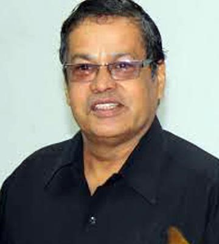
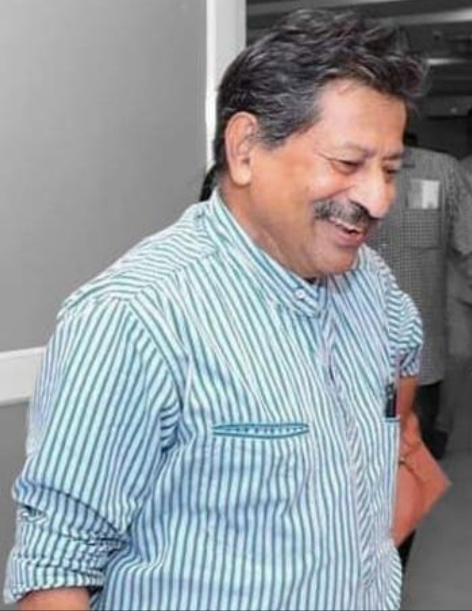
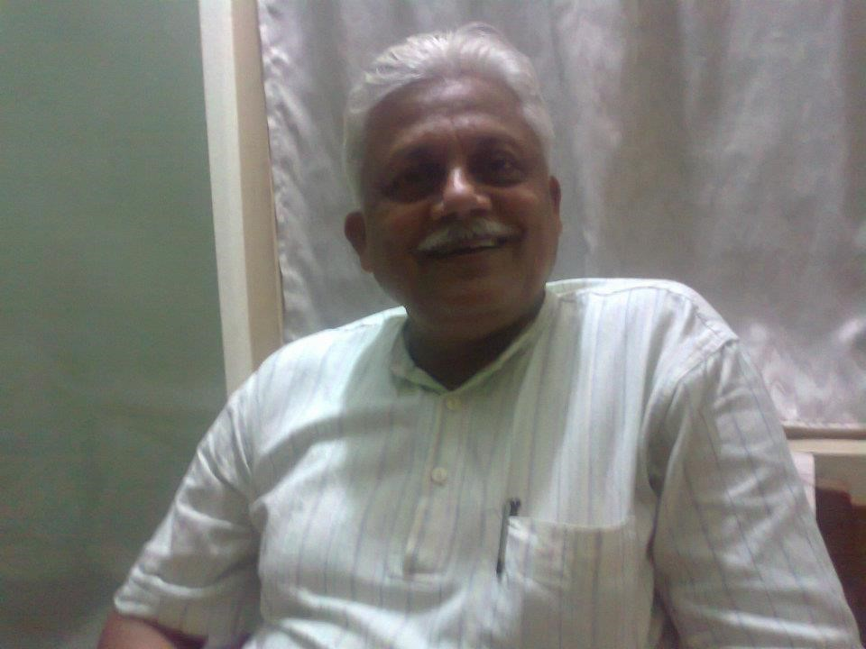
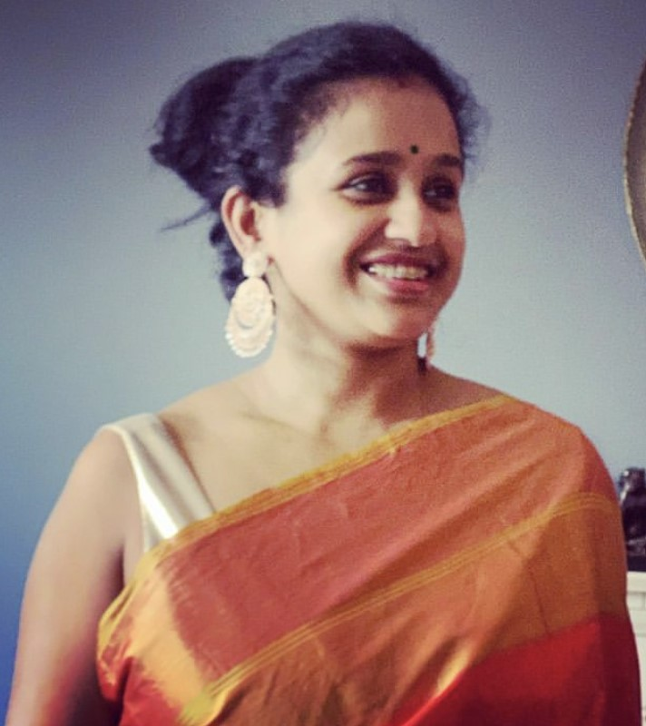
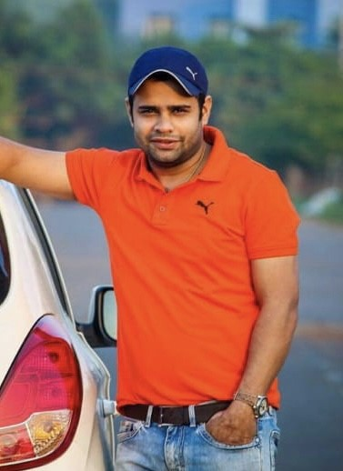

Consultancy Team

COUNCIL FOR TRIBAL AND RURAL DEVELOPMENT (CTRD) Consultancy Team
| Sl. No. | Consultant | Photo |
| 1. | Dr. Rabindra Nath Pati, Ph.D. Farmer Professor, Anthropology Mekelle University Eithiopia |
 |
| 2. | Shri Shirish Chandra Agrawal, IFS, Farmer, P,C. C.F, Government of Chhattisgarh |
|
| 3. | Shri Ramakant Mishra Farmer, Director Commissioner for SC & ST, Bhubaneswar |
 |
| 4. | Professor Premananda Panda Farmer Director SC & ST Training Institute, Bhubaneswar |
|
| 5. | Dr. Nirmal Ch. Dash Ph.D, Farmer Professor, Department of Population Studies, F.M. University, Balasore. |
 |
| 6. | Madhusmita Pati Consultant – Women Empowerment MBA Scotland |
 |
| 7. | Sandeep Pati, B.Tech, IT Consultant |
 |